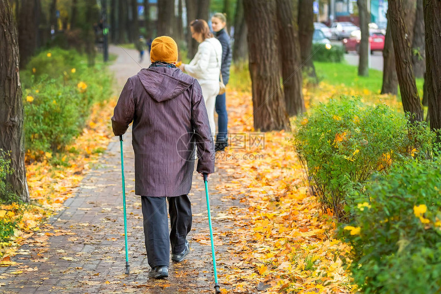
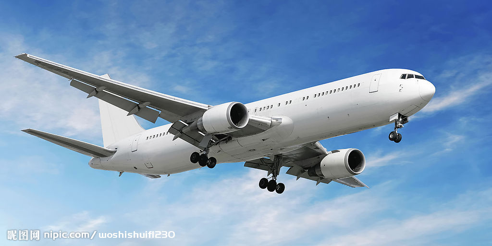
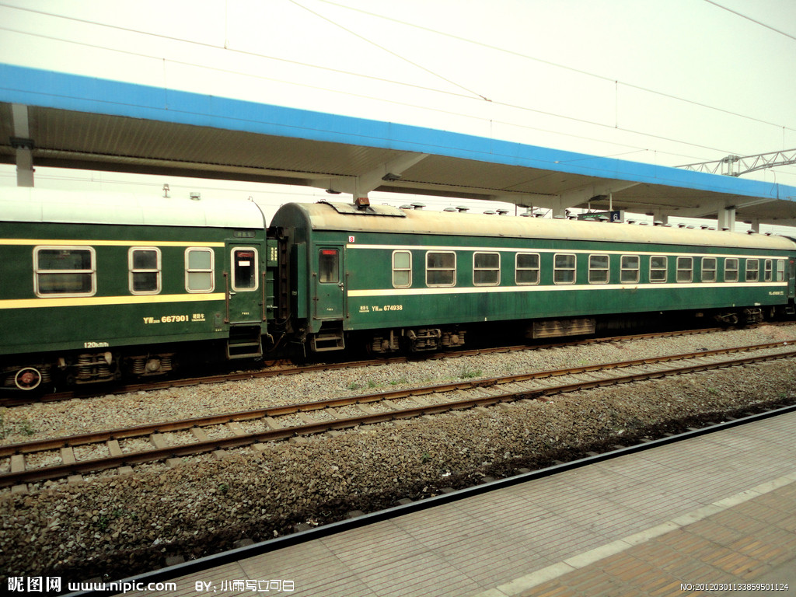
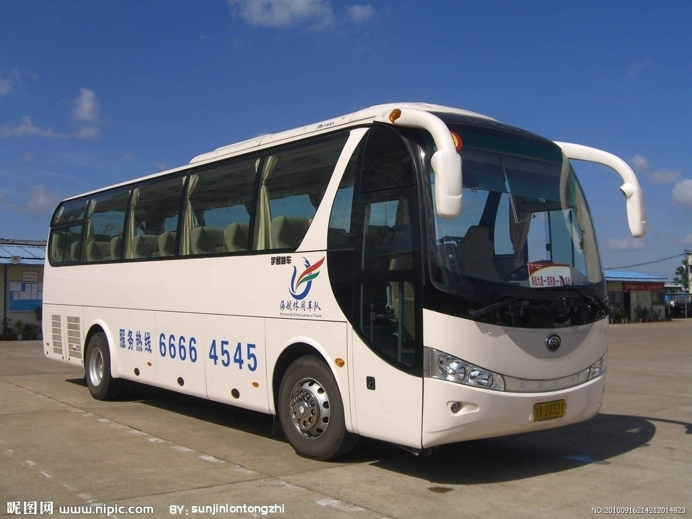
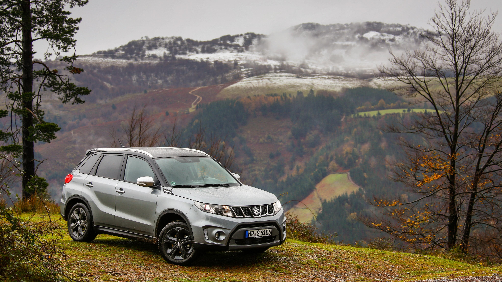
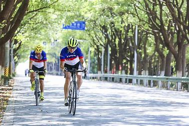
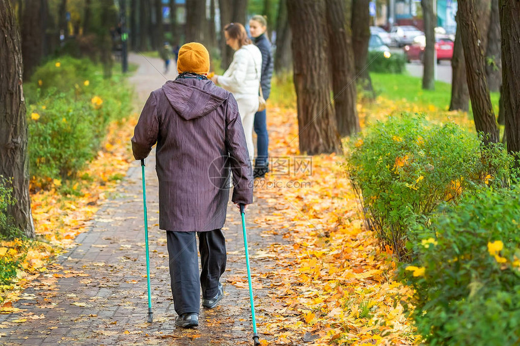
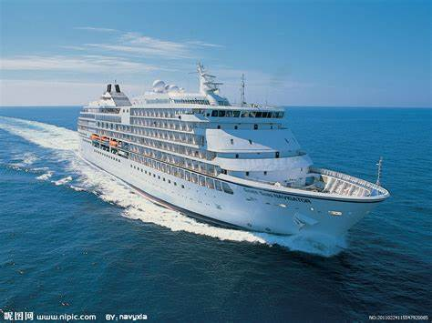
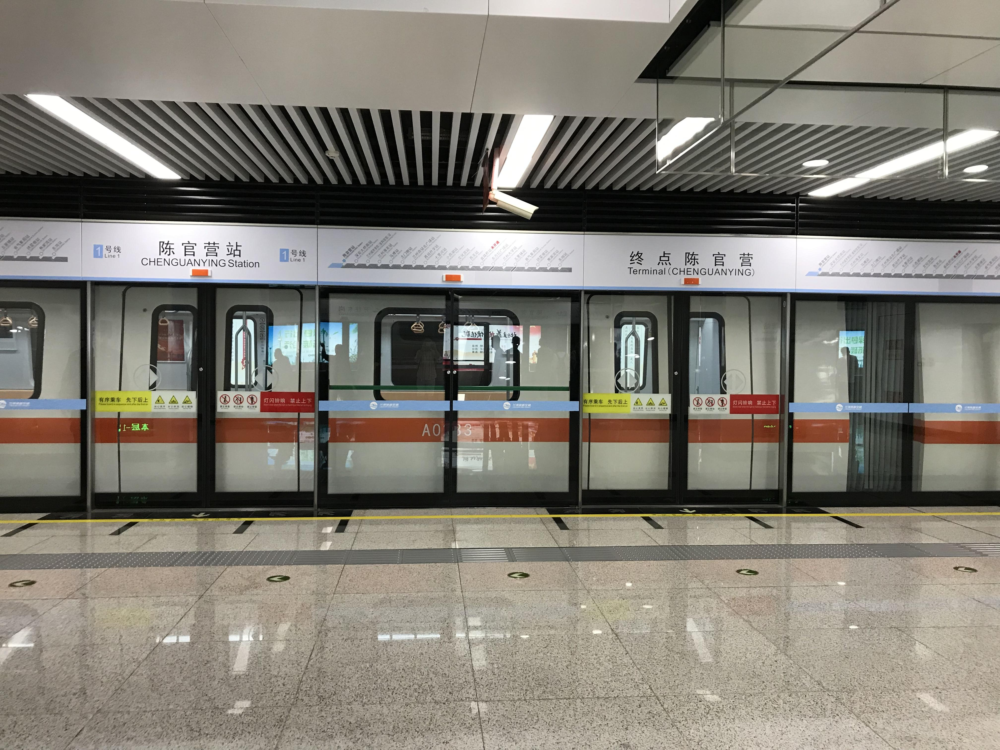

常见的交通方式及优劣
一、飞机
二、火车
三、长途汽车
四、自驾
五、租车

八、游轮
九、地铁
在选择旅游交通方式时，建议考虑目的地的交通基础设施、 旅行的季节、天气条件以及个人的健康状况。提前规划和预订通常可以获得更好的价格和座位选择。
1.快速：适合长途旅行或需要快速到达目的地的情况。
2.高成本：相比于其他交通方式，机票价格通常较高。
3.舒适度：取决于舱位等级，头等舱和商务舱提供更舒适的服务。
二、火车
1.适中的速度：适合欣赏沿途风景，适合中长途旅行。
2.价格中等：通常比飞机便宜，但比长途汽车和自驾贵。
3.舒适度：取决于座位类型，卧铺和一等座提供更好的旅行体验。
三、长途汽车
1.经济：通常比飞机和火车便宜。
2.速度较慢：适合时间灵活且预算有限的旅行者。
3.舒适度：取决于巴士的类型和座位，长途巴士旅行可能较为疲劳。
四、自驾
1.灵活性：可以根据个人行程自由安排时间和路线。
2.成本：包括汽油费、过路费和可能的租车费用。
3.舒适度：取决于车型和驾驶条件，自驾可以提供较高的舒适度和自由度。
五、租车
1.灵活性：适合需要自由探索目的地的旅行者。
2.成本：包括租车费用、保险和燃油费。
3.舒适度：取决于租用的车型。
六、拼车1.经济：如拼车服务，可以分摊费用。
2.灵活性：适合短途或特定路线的旅行。
3.舒适度：取决于共享车辆的条件和同行者。
七、骑行或徒步1.健康：适合喜欢户外活动和探险的旅行者。
2.速度慢：适合短途或特定路线的旅行。
3.经济：不需要额外的交通费用。

八、游轮
1.休闲：适合想要在旅行中享受休闲和娱乐的旅行者。
2.成本：取决于游轮的类型和航线。
3.舒适度：游轮提供各种级别的住宿和服务。
九、地铁
1.经济：适合预算有限的旅行者。
2.速度和舒适度：取决于当地的交通系统和拥挤程度。
在选择旅游交通方式时，建议考虑目的地的交通基础设施、 旅行的季节、天气条件以及个人的健康状况。提前规划和预订通常可以获得更好的价格和座位选择。